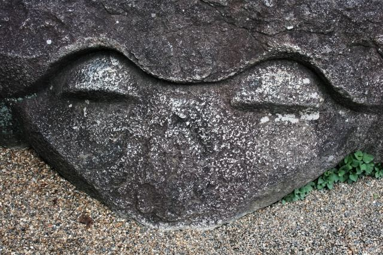
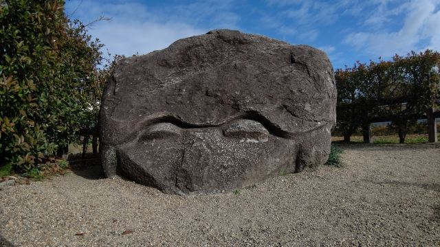
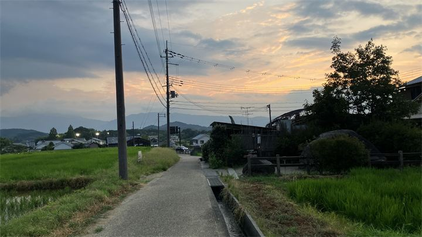

謎に包まれた石造物
丸い目と大きな口が印象的な亀石。祭祀施設や境界石などさまざまな説がありますが、本当の用途は今も分かっていません。

亀石は、飛鳥を代表する謎の石造物の一つです。 大きな花こう岩を亀のような姿に彫刻した石造物で、いつ、何のために造られたのかは現在も解明されていません。 飛鳥に数多く残る石造物の中でも特に人気が高く、のどかな田園風景とともに飛鳥らしい景観を楽しめるスポットです。
| 見学時間 | 自由 |
|---|---|
| 定休日 | なし |
| 料金 | 無料 |
| 所要時間 | 10分 |
| 駐車場 |
野口駐車場
（徒歩約5分・有料）
堂の前駐車場 （徒歩約8分・有料） |
| アクセス |
近鉄飛鳥駅から徒歩約25分。 レンタサイクルなら約10分です。 |
| 地図 | 地図はこちら |

丸い目と大きな口が印象的な亀石。祭祀施設や境界石などさまざまな説がありますが、本当の用途は今も分かっていません。

亀石の周辺には田園風景が広がり、飛鳥らしい穏やかな景色を楽しめます。散策や写真撮影にも人気です。
亀石は飛鳥時代に造られたと考えられる石造物で、長さ約3.6メートル、幅約2.1メートル、高さ約1.8メートルあります。 用途は現在も不明で、祭祀に使われたという説や、水に関わる施設の一部だったという説など諸説あります。 また、「亀石が西を向くと大和盆地が水に沈む」という伝説も語り継がれ、飛鳥の神秘を感じられるスポットとなっています。